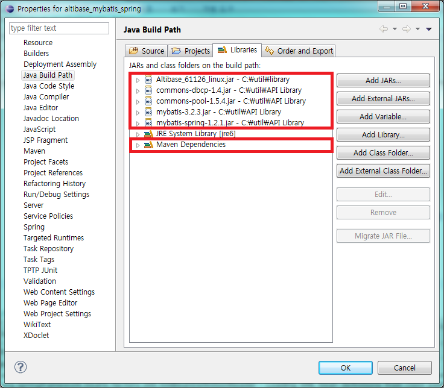

MyBatis, Spring을 ALTIBASE와 연동하기 위해서는 Spring에 MyBatis 모듈을 이용하여 dataSource를 정의하고 ATLIBASE와 연동해야 한다.
본 장은 Spring에 MyBatis 모듈을 이용하여 ALTIBASE와 연결하는 방법을 설명 한다.
Spring에 MyBatis를 연동하여 dataSource를 설정
Spring과 MyBatis를 함께 사용하여 ALTIBASE를 사용하기 위해서는 Spring의 설정 파일(applicationContext.xml)에 다음의 내역을 설정 한다.
- MyBatis 모듈을 이용한 SqlSessionFactory bean
- 트랜잭션에 대한 설정인 transactionManager
- DB에 대한 dataSource
- Mapper Bean 설정 : 연동 작업을 수행하려면 Mybatis와 Spring 연동 관련 모듈이 필요하며 모듈의 이름은 다음과 같다.
- mybatis-spring-1.x.x.jar
mybatis-spring 연동모듈을 사용하려면 자바 1.5이상의 버전이 필요하고 MyBatis와 Spring은 각각 Version 별로 조금씩 다르다.
세부정보는 아래의 표를 참고하기 바란다.
MyBatis Spring 연동모듈 |
Mybatis |
Spring |
|---|---|---|
1.0.0 그리고 1.0.1 |
3.0.1 에서 3.0.5까지 |
3.0.0 또는 그 이상 |
1.0.2 |
3.0.6 |
3.0.0 또는 그 이상 |
1.1.0 또는 그 이상 |
3.1.0 또는 그 이상 |
3.0.0 또는 그 이상 |
MyBatis와 Spring을 함께 사용하기 위해서는 Spring의 ApplicationContext.xml 파일에 MyBatis의 SqlSessionFactory bean 및 Mapper bean을 지정해 주면 된다. Mapper bean은 실제 쿼리를 처리하는 메소드를 정의한 bean으로 Spring의 처리 방식인 Interface를 통하여 처리 하게 된다.
MyBatis, Spring을 연동한 환경에서 Spring에 dataSource를 설정하는 방법은『ALTIBASE_Spring_연동가이드』문서에서 설명한 방법들 중 하나를 선택하여 SqlSessionFactory bean 및 TransactionManager bean의 dataSource property에 설정한 DB의 datasource명을 기술 하면 된다.
다음은 applicationContext.xml 파일에서 dataSource와 SqlSessionFactory bean, TransactionManager bean을 지정해주는 예제이다.
예) altibase_mybatis_spring의 ApplicationContext.xml 파일
… <!-- DriverManagerDataSource 클래스를 이용한 데이터 소스 설정 --> <bean id="dataSource" class="org.springframework.jdbc.datasource.DriverManagerDataSource"> <property name="driverClassName" value="Altibase.jdbc.driver.AltibaseDriver" /> <property name="url" value="jdbc:Altibase://192.168.1.35:36492/mydb" /> <property name="username" value="sys" /> <property name="password" value="manager" /> </bean> … <!--TransactionManager bean 설정 --> <bean id= TransactionManager " class="org.springframework.jdbc.datasource.DataSourceTransactionManager"> <property name="dataSource" ref="dataSource" /> </bean> … <!-- SqlSessionFactory bean 설정 --> <bean id="SqlSessionFactory" class="org.mybatis.spring.SqlSessionFactoryBean"> <property name="dataSource" ref="dataSource" /> <property name="typeAliasesPackage" value="com.altibase.test.domain" /> </bean>
해당 예제는 Spring Template Project를 기반으로 Maven을 사용하여 작성 하였다.
실제 사용자가 추가하는 library는 DB 접속 라이브러리(Altibase.jar), Mybatis 관련 라이브러리(mybatis-3.2.8.jar), Mybatis-Spring 연동 라이브러리(Mybatis-spring.1.2.1.jar)만 필요하며 Spring 관련 라이브러리는 Maven을 이용하여 처리한다.
(Spring Template Project에서 Spring MVC Project를 통해 작성하였으며 해당 모드로 작성시 생성되는 pom.xml 파일에 dependency 태그를 이용하여 자동으로 Library를 import 한다. 자세한 내용은 부록에 명시 한다.)

Connection Pool 설정 방법
Spring-Mybatis가 연동됨에 따라 dataSource를 설정하는 부분이 독립적으로 설정이 가능하게 된다. Spring 연동 없이 Mybatis에서만 다른 모듈의 Connection Pool를 사용할 수 없으며 Spring과 연동을 해야 다른 모듈의 Connection Pool를 사용할 수 있다는 것을 주의해야 한다.
아래 내역은 Connection Pool을 설정 하는 예제 이다.
예) altibase_mybatis_spring의 applicationContext.xml 파일
... <!—Altibase Connection Pool--> <bean id="dataSource" class="Altibase.jdbc.driver.AltibaseConnectionPoolDataSource"> <property name="URL" value="jdbc:Altibase://192.168.1.62:21020/mydb" /> <property name="user" value="test" /> <property name="password" value="test" /> </bean> ... <!—Apache Connection Pool--> <bean id="dataSource" class="org.apache.commons.dbcp.BasicDataSource" destroy-method="close"> <property name="driverClassName" value="Altibase.jdbc.driver.AltibaseDriver" /> <property name="url" value="jdbc:Altibase://192.168.1.35:36492/mydb" /> <property name="username" value="sys" /> <property name="password" value="manager" /> <property name="initialSize" value="10" /> <property name="minIdle" value="25" /> <property name="maxIdle" value="30" /> <property name="maxActive" value="100" /> <property name="validationQuery" value="select 1 from dual" /> </bean>
{kind=link}